Designing a biotechnology information hub for patients and clinicians
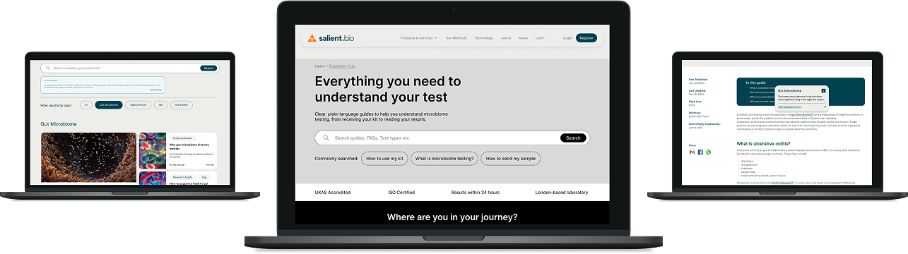
Salient Bio needed to help patients and clinicians navigate complex microbiome testing information with greater clarity and confidence.
I led discovery, translated research findings into design briefs, and ran usability testing with 10 participants: seven patients and three doctors.
We designed an intuitive Learn Hub that helps users find relevant guidance quickly, understand the testing journey and assess the credibility and practical value of microbiome testing.
The challenge
Users needed more than access to educational content. They needed to navigate the testing journey confidently and understand whether microbiome testing was credible, valid and useful for their situation.
The challenge was to organise complex information into intuitive, efficient routes that delivered the right level of detail at the right moment, without unnecessary friction.
-
Different user contexts
New and existing patients and clinicians approached the hub with different questions, knowledge levels and responsibilities.
-
A journey with multiple entry points
Users could arrive while considering testing, registering a kit, interpreting results, researching a report term or deciding what to do next.
-
Accessible without becoming simplistic
The information needed to reduce scientific complexity without removing limitations, methodology or specialist detail.
The opportunity was to create a single educational destination that gives patients and clinicians a shared reference point, supports different routes through the testing journey, and makes complex information easier to find, understand and act on.
Discovery findings → system requirements
Discovery established two requirements for the Learn Hub. The system needed to support flexible entry points while preserving enough structure to orient users through a complex testing journey.
Finding 01
Users needed flexible routes into the same information system
People could arrive through search, product pages, report terms, clinician referral or general curiosity. A single prescribed path would not reflect those different starting points.
Finding 02
Complex information needed to be simplified without flattening different user needs
Patients needed clear orientation and plain-language explanations, while clinicians needed access to terminology, methodology, limitations and supporting resources.
Designing one information system for different routes and levels of detail
Instead of organising the Learn Hub solely around internal content categories, we structured it around the questions users were trying to answer and the stage of testing they were in.
Guided journey routes provided orientation, while search, contextual definitions and clinician resources gave users more direct access when they arrived with a specific question or term.
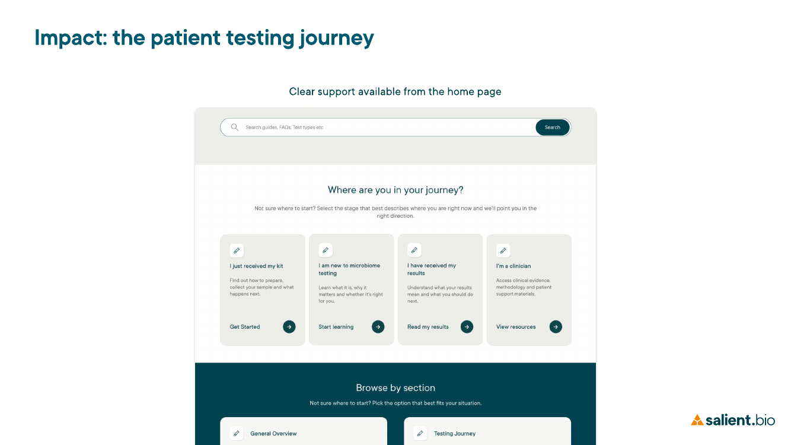
How to interpret the testing evidence
Small task samples
Most individual tasks were completed by six participants. The next-steps task had five participants.
No time-on-task data
Timing was not captured, so conclusions should focus on route clarity, completion, confidence, comprehension and observed friction.
Directional evidence
Some confidence and reassurance signals were supported by participant comments. The results should guide design decisions, not be presented as population-level proof.
Design decision 01
Strengthen entry points into decision support
Design intention. The homepage needed to help people decide whether testing was relevant without allowing one access method to overpower the guided routes.
Prototype behaviour. Search was prominent, but suitability guidance competed with other destinations and one intended “Is this test right for me?” route was not connected in the prototype.
- 4 of 6completed the task
- 2 of 6stayed close to the intended route
- 50%first-click success
“It felt buried. Expected a CTA and product/service route.”
Users found relevant content through plausible but indirect routes. The issue was route clarity at a decision point, rather than evidence that the content itself lacked value. The missing prototype link also means the result reflects both information architecture and prototype completeness.
{kind=link}
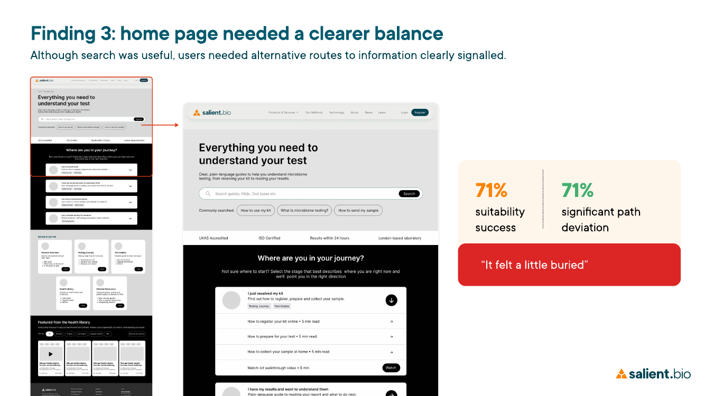
{kind=link}
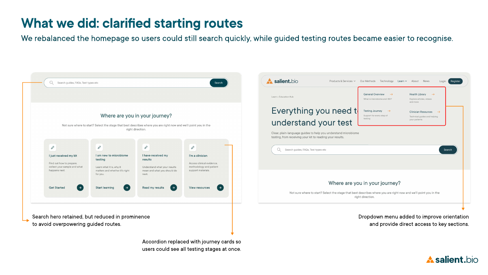
Design decision 02
Make search results easier to interpret
Design intention. Search gave users a direct route when they arrived with a specific question, term or testing concern.
Prototype behaviour. Relevant content was usually reachable, but active filters, topic chips, suggested searches and article results were not always easy to distinguish.
- 83%search-task success
- 92%weighted usefulness
- 5 of 6said results matched expectations
- 50%experienced a filter or topic-chip issue
- 0.5average path deviation
Search worked well as a direct access route, but the results page still needed to explain its own hierarchy. The revision separates the search term, proposed quick answer, primary article results, active filters, suggested searches, related topics and routes back into the wider Learn Hub.
- 01Search term
- 02Clearly labelled quick-answer concept
- 03Primary article results
- 04Visibly active filters
- 05Suggested searches and related topics presented as separate groups
- 06Clear routes back into the wider Learn Hub
{kind=link}
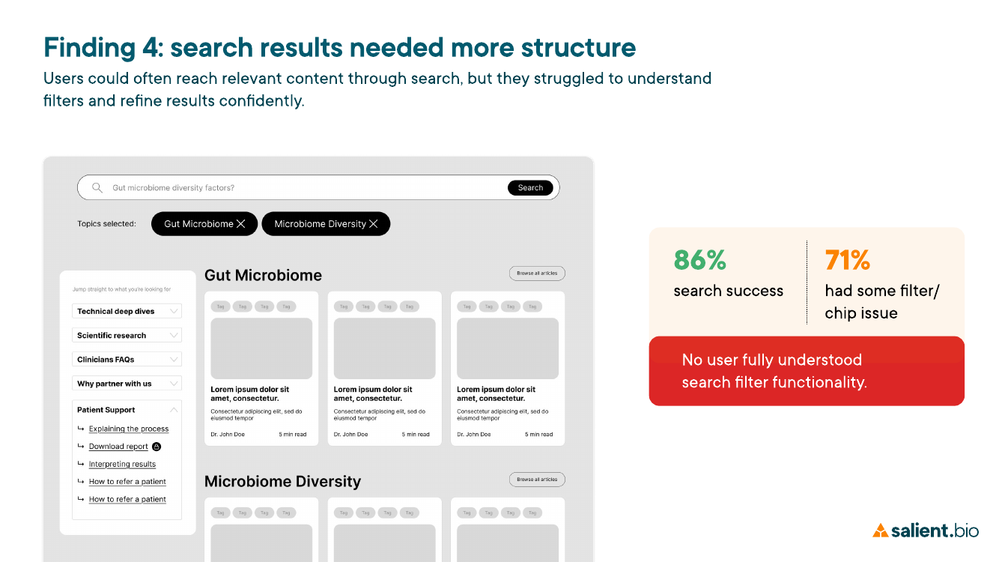
{kind=link}
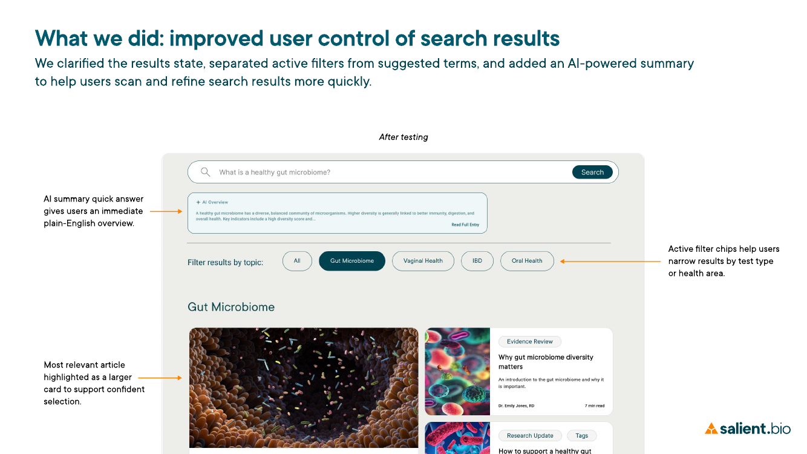
Design decision 03
Keep definitions within the user’s context
Design intention. Glossary support was intended to make specialist terminology understandable without removing the scientific detail that gave the content credibility.
Prototype behaviour. Glossary terms looked similar to surrounding text, and opening a separate glossary made it difficult to return to the original reading position.
- 33%strict glossary success
- 67%experienced a clear loss-of-place issue
- High confidenceonce definition support was located
“Link looked the same as surrounding text; could not click back from glossary to article.”
The proposed revision makes technical terms visibly interactive and opens definitions in an in-place popover or side panel. Users retain their reading position while specialist detail remains available without interrupting the main explanation.
{kind=link}
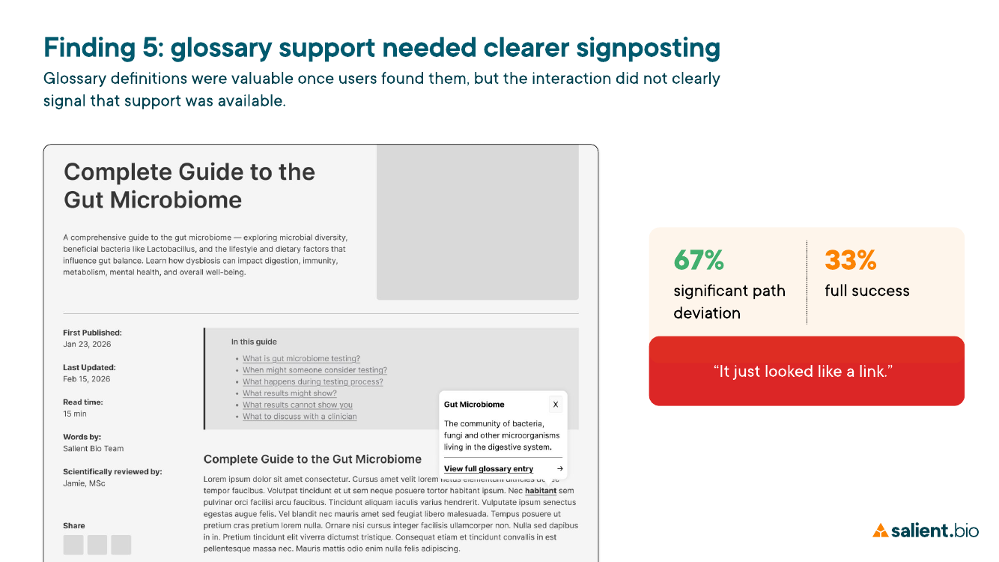
{kind=link}
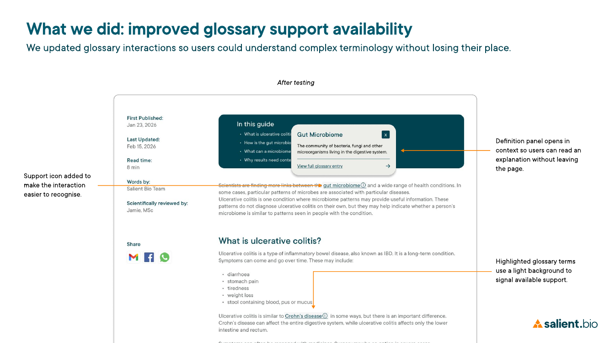
A connected support system across the testing journey
The final concept combines guided journey routes with direct access to specific information. Patients and clinicians can move through the Learn Hub according to their stage, question and level of knowledge without being forced through one prescribed pathway.
Group 01
Patient journey
Guided routes connect deciding whether testing is relevant, kit registration, understanding results and deciding what to do next.
- 92% procedural clarity
- 67% step-order comprehension
- 100% next-step success
- 4.75/5 average next-step confidence
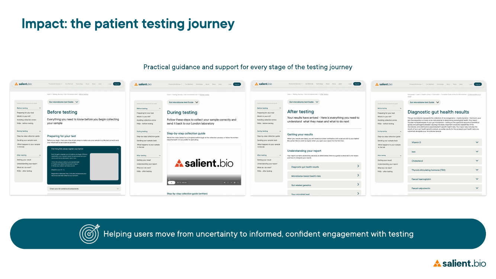
Group 02
Search and contextual support
Search, active filters, article hierarchy and the proposed quick-answer concept provide direct access, while contextual definitions keep technical support inside the article.
{kind=link}
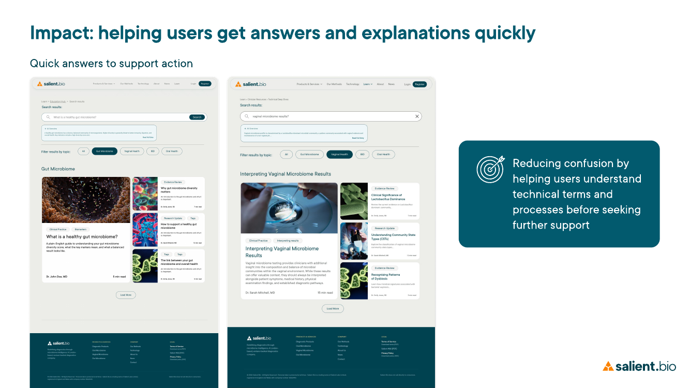
{kind=link}
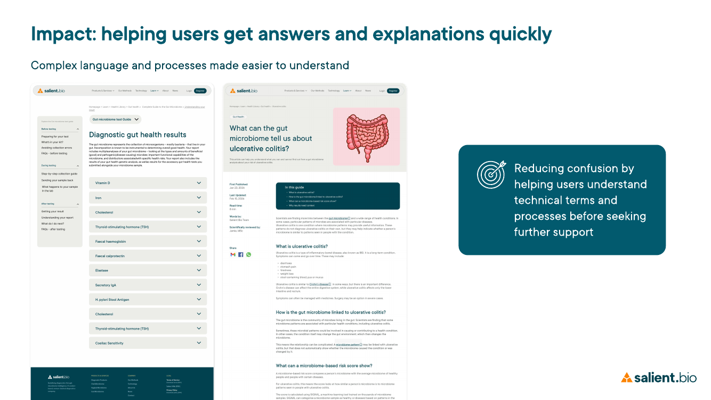
Group 03
Patient and clinician shared support
Plain-language result explanations connect to clinician follow-up, appointment questions, related Health Library content and professional resources.
- 100% result-meaning success
- 100% comprehension accuracy
- 4.5/5 average result confidence
- 100% next-step clarity
- 40% wanted more practical follow-up support
{kind=link}
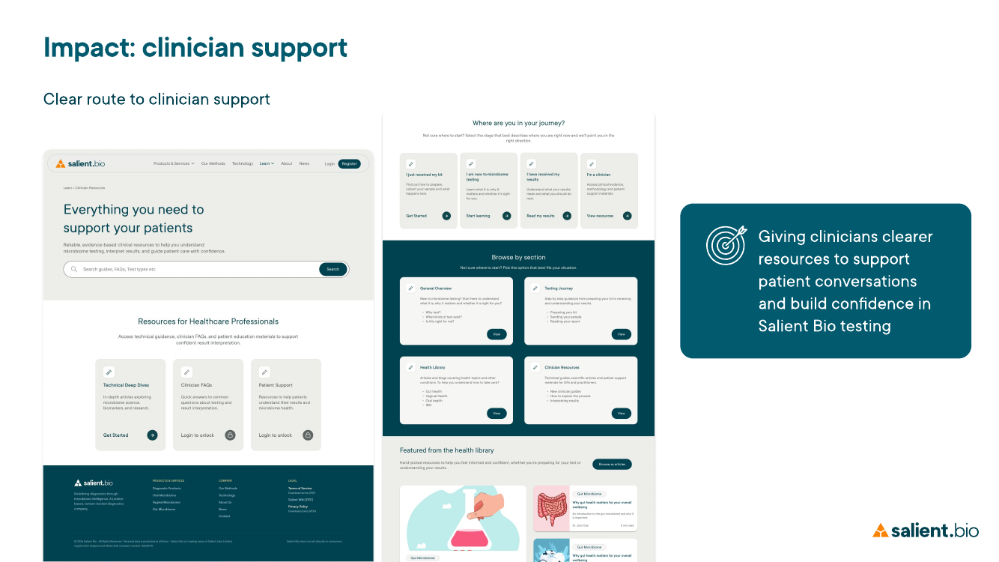
{kind=link}
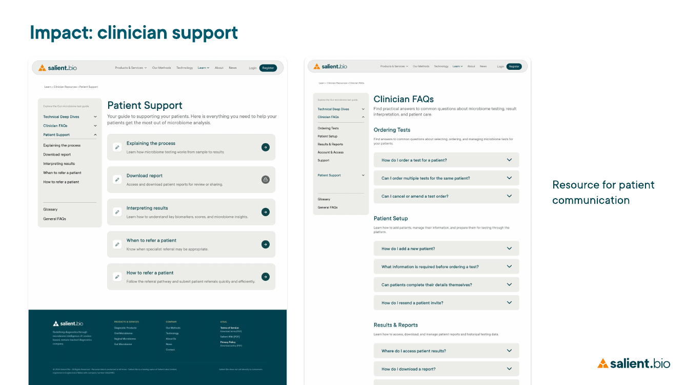
{kind=link}
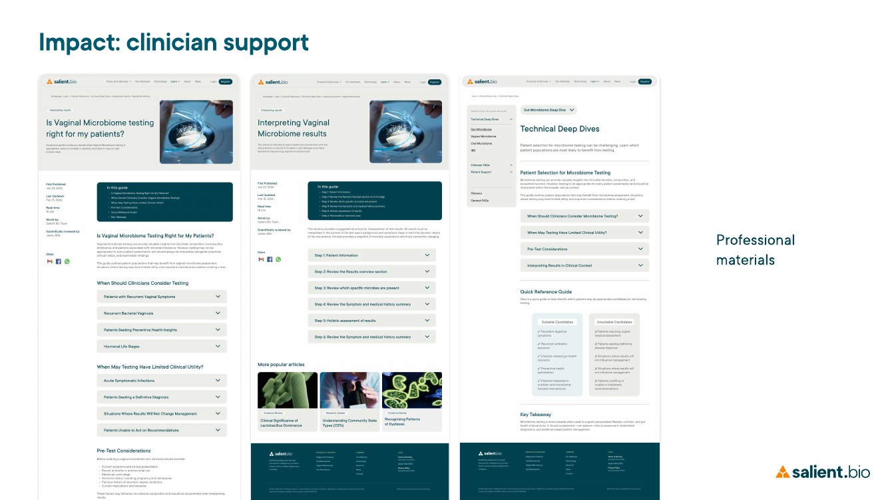
These task results describe navigation and comprehension within this usability study. They are not evidence of clinical effectiveness, long-term behaviour change or population-level outcomes.
What the design enables
For patients
Makes support across the testing journey easier to find, understand and act on.
For clinicians
Provides clearer educational material for explaining reports and discussing appropriate next steps.
For Salient Bio
Turns educational content into a connected support system rather than a larger collection of articles.
Reflection and next steps
The strongest contribution was not an individual interface feature, but an information system capable of balancing flexible access, guided journeys, scientific complexity, different levels of user knowledge and shared patient and clinician support.
The proposed refinements now need further evaluation. They should be treated as evidence-led directions rather than validated outcomes.